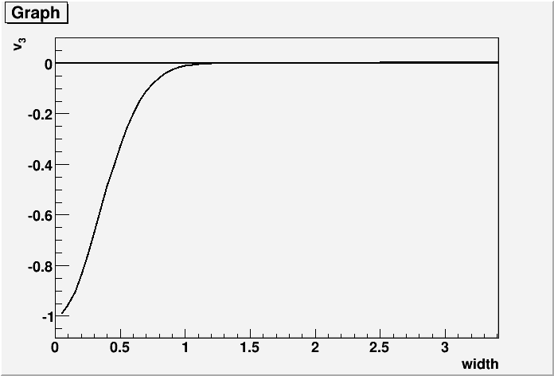
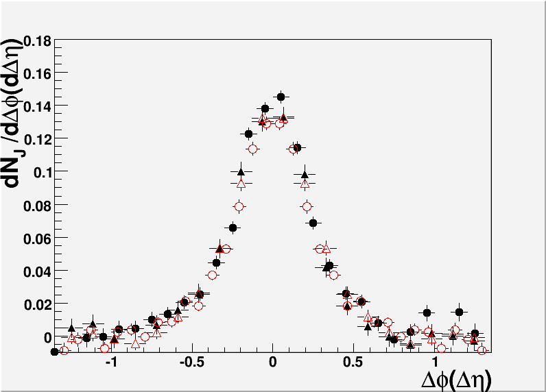
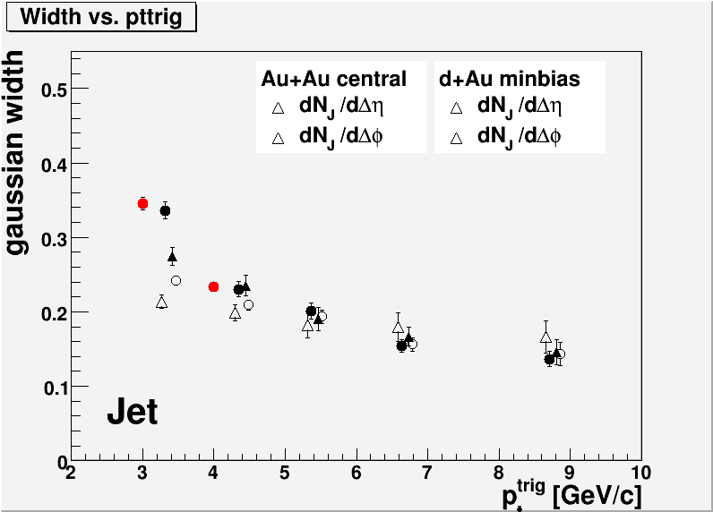
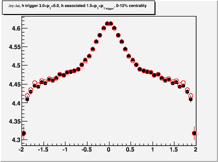

- line 112, "with respect to p+p" -> "with respect to those in
p+p, scaled by number of binary nucleon nucleon collisions", or
something better.
Done
- figure 14, caption, "\eta/S" -> "\eta/s"
Fixed, thanks
- references, please check the author's names. Sometimes you use
B.I. Abelev, sometimes you add a space between B. and I. Could you
check and make them consistent? The comment also applies for other
references.
We checked the source and there is always a space. It looks like sometimes the text gets squeezed tighter to fit it on one line, but this is the style file of the journal.
- Please check the author list and acknowledgments and make sure
they are the most up to date one. Also for the authorship of Leon, and
Marek, which was discussed at point 4 at
http://rhig.physics.yale.edu/~nattrass/Research/web/paper/EnergyAndSystemDependence/GPCMeetingMinutes24Nov2010.html, could you take care of this by adding them?
We have updated the author list and added both the Birmingham people's names and Christine's name.
- (Reply to Joern's suggestions) The point that Cu+Cu vs Au+Au
allows comparisons of similar energy densities/system sizes with
different geometries should
be made more in the paper.
-- What about plotting some dash lines from top to bottom of Fig. 12 & 13, showing the eccentricity boundaries. For example, draw a tilted dash line of \epsilon=0.2, and let it cross the bands of each Au+Au/Cu+Cu and 200/62.4GeV.
We're not sure we understand this suggestion. However, any calculation of the eccentricity would be highly model dependent and would require a long explanation. We therefore prefer to address Joern's suggestion by modifying the text.
- (Reply to Joern's suggestions) In the conclusion make the
point that the ridge and the jet scale the same way with energy.
-- Is this about the Fig.13 and line 709-713? If that is, I think your line 913 has expressed this point. However, your line 917 does give another possible scenario, that if v_3 doesn't change according to the energy, then your b_{\Delta\phi} obviously increases faster than your Y_J. Here I assume b_{\Delta\phi} * v_{3}2 covers the ridge yield.
No, this is about the way we address the conclusions we can draw from Fig. 13 in the conclusion section.
- Line 524-525. In my understanding of Equ.11, it's the square
item \tilde{v}_{n}^{2}, instead of \tilde{v}_{n} itself, that
corresponds to the average of the product of the trigger v_{n} and
associated v_{n}, correct?
You are correct. We have fixed the typo.
- Line 820-824. You may want to re-organize the text, such that
in the end of 1st paragraph, you emphasize the fact "independence of
collision energy", while also referring to Fig. 12 and 13. Then in the
beginning of 2nd paragraph, you emphasize the "significant deviation
between collision systems", while also comparing to Fig. 12 and 13.
We agree this paragraph was not well written. We have considerably shortened this to avoid having to get into a complicated discussion of flow, eccentricity, and the collision system and energy dependence of these effects. We are open to additional suggestions on how to improve this section.
- Line 852. When you say "comparisons of the data favor \eta/s =
0.16", does that mean this calculations is based not only \eta/s, but
also collision system? The theory band obviously follows those Au+Au
points (both 62.4 and 200 GeV) but not Cu+Cu.
These calculations are only for Au+Au 200. This has been explicitly stated in the text now.
- Fig. 14. The central panel legends show very thick boundaries
on my pdf viewer. I had to zoom in to see the band pattern. Not sure if
it's only my computer though.
Yes, these did look a little thick. The width has been changed from 3 to 2.
- Hi All, I looked over the v3 part of the draft and I think it's
a fair representation of the collaborations current understanding.
- The point that Cu+Cu vs Au+Au allows comparisons of similar
energy densities/system sizes with different geometries should be made
more in the paper
This is now the first paragraph in the conclusions. Let us know what you think.
- The discussion of different v3 models is very long and could
perhaps be shortened
Reworded. Please reread.
- In the conclusion make the point that the ridge and the jet
scale the same way with energy
We tried out a new wording. Let us know what you think.
- Eq.11: why is the Gaussian written as Y_J/2\sigma_\phi2\sigma_\eta2
rather than normally Y_J/2\pi\sigma_\phi\sigma_\eta?
This was a typo. It is fixed.
- Line 530-534: I think this is only true for a narrow
Gaussian. A wide Gaussian would give a positive v3.
We plotted the v3 from a Gaussian below

Indeed, for a width greater than about 1.5 the 3rd Fourier coefficient is positive, however, it never goes above about 0.0025. As requested we have added the word "narrow" so that it now reads, "A narrow roughly Gaussian..."
- Line 534-536: I do not follow this. Is it a 1-dimensional
Gaussian in $\Delta\phi$? I also do not understand what it means by
"the fits were robust by parameterizing the ridge as a Gaussian in
$\Delta\eta$ and omitting the v˜3 and v˜4 terms."
We have removed this sentence. This was the cross check using the standard E-struct fits which we did for Lanny and which is documented in the analysis note.
- Line 536-538: I don't know what bias it means. Nonflow
contribution certainly would not bias the Fourier fit result. However
nonflow biases/affects the interpretation of the fit results.
We have removed this sentence since it is discussed in the discussion section.
- Second, I have a comment/issue left from the rest part of the
paper. I'm still uncomfortable with the tail of the \Delta\eta
correlation function in the lower right panel of Fig.7 for central ZDC
Au+Au 200 GeV data. It significantly deviates from the \Delta\phi
correlation function. Christine and I had a few private email exchanges
on this. I think it may be due to the two-particle \Delta\eta
acceptance correction applied in this paper. The applied acceptance was
obtained from the product of two event-wise averages of trigger and
associated particle eta distributions. Since the eta acceptance has
some dependence on the z vertex position so the product of the averages
will be different from the average of the product, where the latter
should be really used for two-particle acceptance correction. The
latter is usually obtained from mixed events with similar vertex z
positions as done in other analyses. I think it is worthwhile to check
the effect of this. Before doing that, can Christine plot the
\Delta\eta correlation to larger \Delta\eta? The current plot cuts off
at \Delta\eta=1.4.
Our original reply is here with a detailed comparison to the plot you reference. In addition to the discussion in the GPC meeting and over emails sent to the entire GPC, following the discussion you reference above you said the following on Jan. 25th, 2011 in an email sent at 2:55 PM EST to Jana and Christine:
"OK, plotting them together does give the impression that they are not very different. It is the systematic trend on the tail that makes them look quite different if viewed individually. Moreover your points are raw data correlation so the error bars are small. If viewed with comparable error bars, the difference would be less striking. So I think I agree there's nothing obvious to be red herring. "
The deta distributions used in every figure for every data point are in the analysis note in the appendices, sorted by the figure they are used in in the paper. The figure you are requesting is already in appendix H.D.
In addition below are comparisons to figures in the ridge paper. To the projections in Au+Au 200:

The open symbols are this analysis and the closed symbols are from the ridge paper. Triangles are from the dphi projections and circles from the deta projections. In addition:

Red symbols show the widths from the deta projection in this analysis.
In addition, we followed Paul's suggestion and repeated our analysis with a tight vertex cut and a loose vertex cut to see if our event mixing method leads to any distortions in the shape of the signal. The result is below:

The standard analysis is shown in black and the analysis for |vtx z| < 2.5 is shown in red for Au+Au collisions at 200 GeV. No difference is seen.
Below is the cross check you requsted where I did the even mixing separately for 0-5% and 0-12%

There are no differences which would alter the yields or the widths presented in this paper.
- 211: We changed the "A+A" to "d+Au". It was a typo.
- 267: done
- 289: Changed to "Corrections for..."
- 295: done
- 297: In principle low pT tracks can merge too. High pT tracks are more likely to merge because if they share hits they are more likely to share a larger percentage of their hits. (Needs more thought)
- 372-373: Done.
- Fig. 3: Done. Thanks for your help.
- 404: Done.
- 459-461: Agreed, this was a confusing wording. Tried a new one - please check.
- 515: We removed this phrase. When the ZYAM method is used, because we use a single point to fix the background, statistical fluctuations can lead to an odd location of the background. If we use the entire deta range, we are less susceptible to these effects. For comparison, we could determine the ridge yield from the large deta region only - which would give the same answer for high statistics - but for low statistics the background could be fixed to an odd value due to statistical fluctuations.
- 541: We considerably changed this paragraph in response to other comments and much of the interpretation is removed already.
- 551-552: We added the "and the ridge"
- Fig. 7 caption: Done
- 591: Done
- 614-615: We cut the phrase "to study medium modification." We had had statements about medium modification in earlier drafts but the consensus was that the effects were minor. They are also statistically significant, so it's hard to come up with a good wording for mentioning these differences without overemphasizing them.
- Fig. 10 caption: Added ptttrig
- 640-641: done
- 691: done
- 816: This section was completely rewritten.
- 826-829: We agree this paragraph was not well written. We have considerably shortened this to avoid having to get into a complicated discussion of flow, eccentricity, and the collision system and energy dependence of these effects. We are open to additional suggestions on how to improve this section.
- 857: Yes,
the
theory is off from the calculation by a factor of two. We did not
stress this point in the paper because on the theory side our kinematic
cuts may lead to a biased event selection in their implementation of
this model and on the experimental side it's not yet clear how non-flow
contributes to v3.
We add references to the figure in the text now.
- Fig. 14b: We have made the lines thinner.
- 885: We removed this sentence here because we address this already in the last sentence of the conclusions. We added "for the production of the ridge" to this last sentence.
- 913: we removed this sentence anyways.